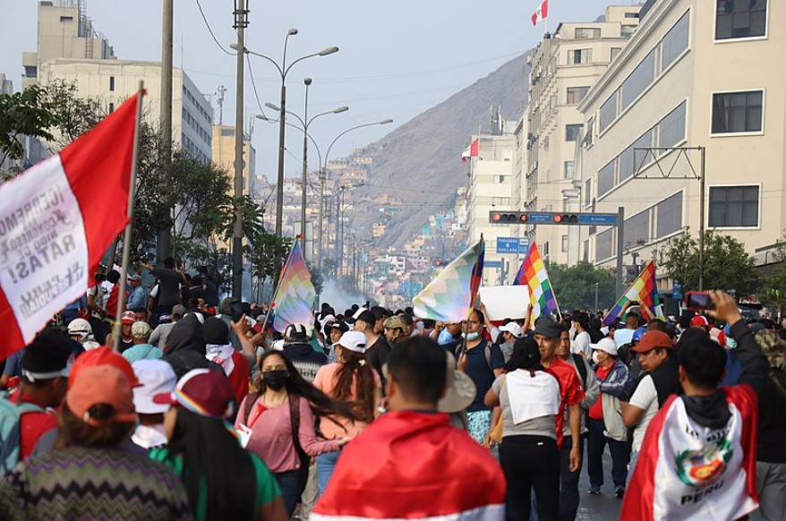

All Around Us
Through Pachakutiys (Turnings of the World) and
across space, the Mountains and their memories stay with us.
Through Pachakutiys (Turnings of the World) and
across space, the Mountains and their memories stay with us.

Back in the early 2000's, Indigenous peoples protested then Peruvian Dictator, Alberto Fujimori's human rights abuses and called for his removal.
In 2023, the march was done again, this time against President Dina Boluarte who has been accused of similar abuses and helping the wealthy conslidate their power.
Sitting atop the same land that of the Tawantinsuyu, people find their strength in it to resist the same as their ancestors did against Spanish terrorists.
Inti Raymi is a traditional religious ceremony of the Inka Empire in honor of the god Inti (Quechua for "sun"). Inti appears on the flags of Argentina and Uruguay and is considered a benevolent deity alonside his sister Mama Quilla.
The festival goes on to this day and is recognized as the second-largest festival in South America and the most important and well-attended celebration of the year in Cusco.

A Modern Inti Raymi Festival in Peru
Inti Raymi shows that the people still on the land remember its traditions.
By Cyntia Motta - Own work, CC BY-SA 3.0, Link
Often translated into spanish as Buen Vivir or Good Living, Sumak kawsay is a modern philosophical framework rooted in Indigenous perspectives.
As opposed to looking for acculumation and exploitation, Sumak kawsay preaches balance, harmony and respect for the land. Current Andean nation states have taken its ideas and thanks to its flexible framework, integrated it into their laws and society as they can.
Through Sumak kawsay, people on the land remember that in the past there is the future.
For more historical information, Visit:
For Contemporary Indigenous Andean perspectives:
Electro win sound by Unlistenable | License: Attribution NonCommercial 4.0